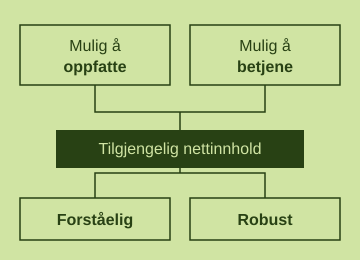
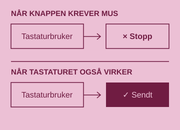
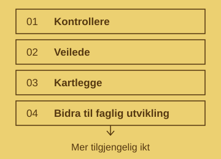

1. Hva menes med universell utforming, og hva står WCAG for?
Universell utforming betyr at produkter, tjenester, og miljøer, skal kunne bli brukt uavhengig av funksjonsevne. På nett kan det for eksempel være lesbar tekst, alt-tekst til bilder eller at siden kan brukes med tastatur.
Web Content Accessibility Guidelines (WCAG) er de som lager rettningslinjene for universell utforming på nettsider og slikt (at alle skal kunne bruke det). De har både engelsk og norske guider jeg har lest gjennom.

2. Hva kan være en konsekvens dersom vi lar være å forholde oss til universell utforming (enten på nett eller i virkeligheten)?
En konsekvens jeg tenker på er jo at noen blir utestengt fra tjenester andre kan bruke.
For eksempel trapper uten rulletrapp kan stoppe en person i rullestol ifra å få tilgang til lokalet.

3. Hvem er Uu-tilsynet, og hva er deres primæroppgaver?
Det er tilsynet for universell utforming av ikt. De kontrollerer at nettsider, apper, og selvbetjente tjenester følger universell utforming ut ifra regelverket til WCAG av W3C.
De hjelper også virksomheter med å følge kravene, skriver ned status for digital tilgjengelighet og hjelper til med universell utforming.
